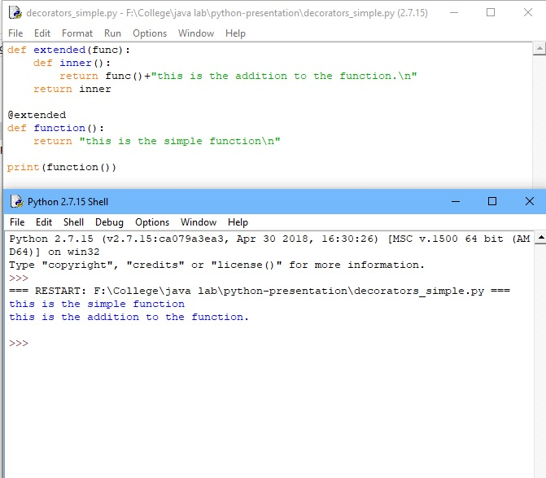

A decorator is a function that takes a function as an argument and returns a function as a return value.
Why to use decorators?
Decorators allow us to wrap another function in order to extend the behavior of wrapped function, without permanently modifying it.
In order to learn about generators we first need to understand a few basic concepts:
Iterators
Any object that wants to be an iterator must implement following methods.
1. __iter__: Method that is called on initialization of an iterator.
2.next: The iterator next method should return the next value for the iterable. When an iterator is used with a ‘for in’ loop, the for loop implicitly calls next() on the iterator object. This method should raise a StopIteration to signal the end of the iteration.
Here is a simple example of decorators

Yield keyword
The yield statement suspends function’s execution and sends a
value back to caller, but retains enough state to enable
function to resume where it is left off. When resumed, the
function continues execution immediately after the last yield
run.